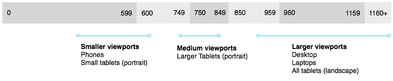
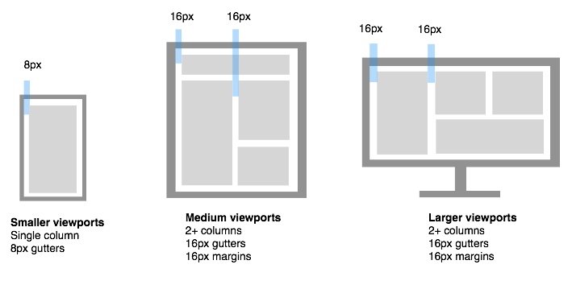

Design language
A skeleton structure for design rules that apply across the account section (and the rest of the site eventually). Just a starting point, will fill out and amend as we go.
This should probably include html/css snippets for using in prototypes
Layout
Breakpoints
Existing breakpoints with typical viewport ranges.
Spacing
Smaller viewports
Default margins and gutters set to 8px, use multipes of 4px if design requires something different.
Medium to Large viewports
Default margins and gutters set to 16px, use multipes of 8px if design requires something different.
Typography
- Fonts
- Sizes / leading
- Lists, paragraphs, links etc...
Colours (and usage)
Cross site elements / components / patterns
- Modal windows
- Messages (validation / errors / etc...)
- Buttons
- Form elements ???
- Progressive disclosure
- Transitions
These last two are starting to move away from a visual language and moving into IxD patterns which I'd like to treat separately